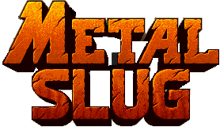
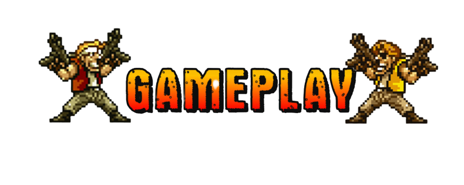

<!DOCTYPE html>
<html lang="pt-br">
</html>
<head>
    <link rel="stylesheet" href="mystyle.css">
    <title>Metal Slug</title>
 
    </head>
<body style="margin:auto;width:1000px;text-align:center";>
  <header>
    <figure style="margin:0">
    
    </figure>
</header>
<section>
        <hr/>
    <div class="topnav">
      <nav style="background:#FF6600; width:1000px; height:40px; line-height:40px; color:#CCC;">
             <a href="Prova.html">HOME</a> 
             <a href="produtos.html">PRODUTOS</a> 
             <a href="Gameplay.html">SOBRE</a> 
             <a href="fale-conosco.html">FALE CONOSCO</a> 
    </div>
       </nav>
        <hr/>
        <figure style="margin:10px auto;">
            
        </figure>
    <div class="header">
        <h1>header</h1>
            <strong>Metal Slug é uma série de jogos de tiro estilo plataforma (run-and-gun) desenvolvido pela SNK, inicialmente lançados para arcade.</strong>
        
        </p>
   </div>
    
        <p>Metal Slug Code: J, anunciado em junho para download em celulares Android e iOS (iPhone), é o novo título da extensa franquia Metal Slug.
           Uma das séries mais icônicas da produtora SNK desde que foi lançada, nos anos 90, Metal Slug ganhou versões para fliperamas, PlayStation 1 (PS1), Game Boy Advance,
            Nintendo Wii, PSP e até uma coletânea para o atual PlayStation 4 (PS4).

            Conheça Metal Slug Code: J, novo jogo da clássica série que chega em 2020
            
            O novo jogo, com lançamento previsto para 2020, tem sua principal novidade no visual, com gráficos totalmente em 3D ao invés da clássica arte em pixels.
             A jogabilidade mantém os movimentos laterais de um jogo 2D, mas traz controles na tela e um sistema de mira em que "procura" automaticamente os inimigos mais próximos. Relembre, a seguir, dez jogos da franquia Metal Slug e conheça suas curiosidades.</p>
      <div class="row">
            <h2>Colum</h2>
            <strong>1. Metal Slug (1996 - Fliperama, Neo Geo, PSOne, Saturn)</strong></p>
      </div> 
      <div class="column">   
        <p>
                O primeiro game da série Metal Slug apresentou a jogadores dos fliperamas e Neo Geo
                 uma aventura com tiroteios frenéticos que remetia a grandes clássicos dos anos 80, como Contra. No papel dos soldados Marco e Tarma, os usuários enfrentavam um grande exército de inimigos pela frente. Com suporte a multiplayer cooperativo, o game tinha um alto nível de dificuldade e um vasto arsenal de armas diferentes, entre elas, a imortalizada Heavy Machine Gun.
        </p>
        </div>
        <figure style="margin:0">
                                 
        </figure>
    </section>
    <hr/>
    <footer>
        <p>Metal Slug SNK - Todos os direitos reservados&copy;</p>
    </footer>
</body>
</html>
